My perpetual bubbles work is a sound reactive TouchDesigner project. It was created as a pushback to the typical abstract style often created in the program. I wanted to represent real life in the bubbles and how they interact by bouncing off each other.
oneiricOS is an experimental video work inspired by Hutton’s paradox. Playing on the themes of perception, the work immerses audiences in organic shapes and digital distortion questioning what happens when real life and digital worlds begin to merge into each other.
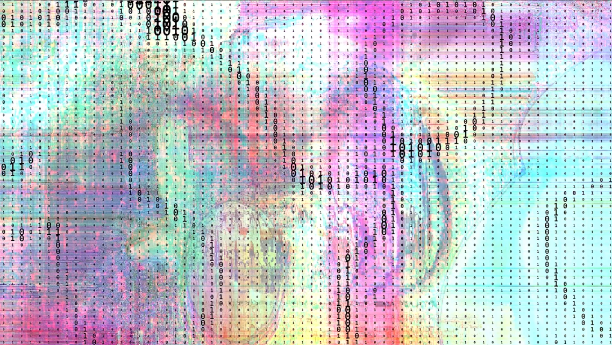
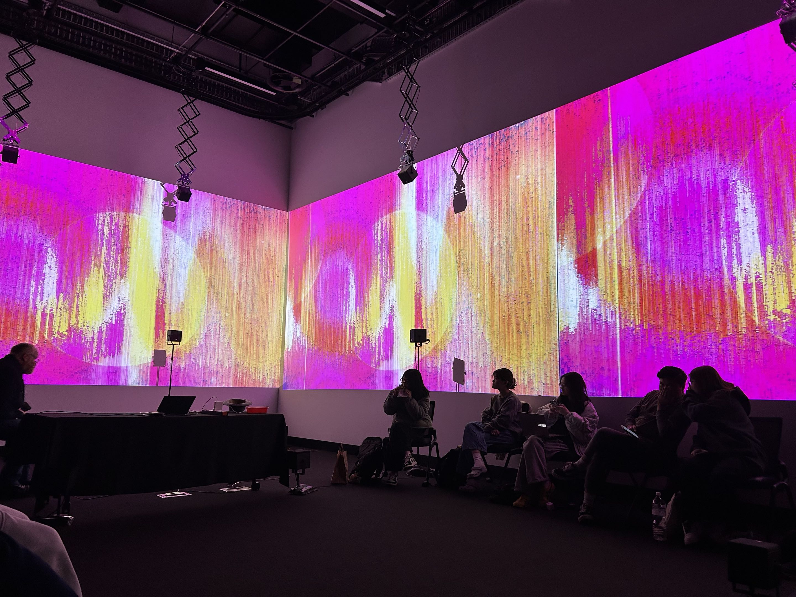
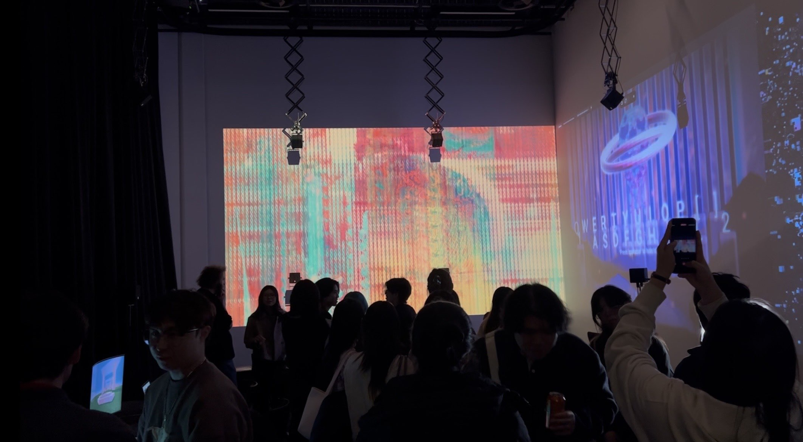
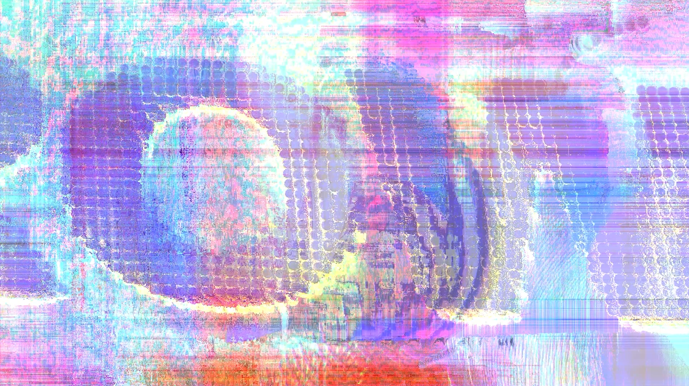
This interactive display is intended to be presented across 3 walls of a room with a microphone set up at the front. Participants would blow into the microphone, spawning the bubbles and watching them float to the end of the room from different angles in live time.
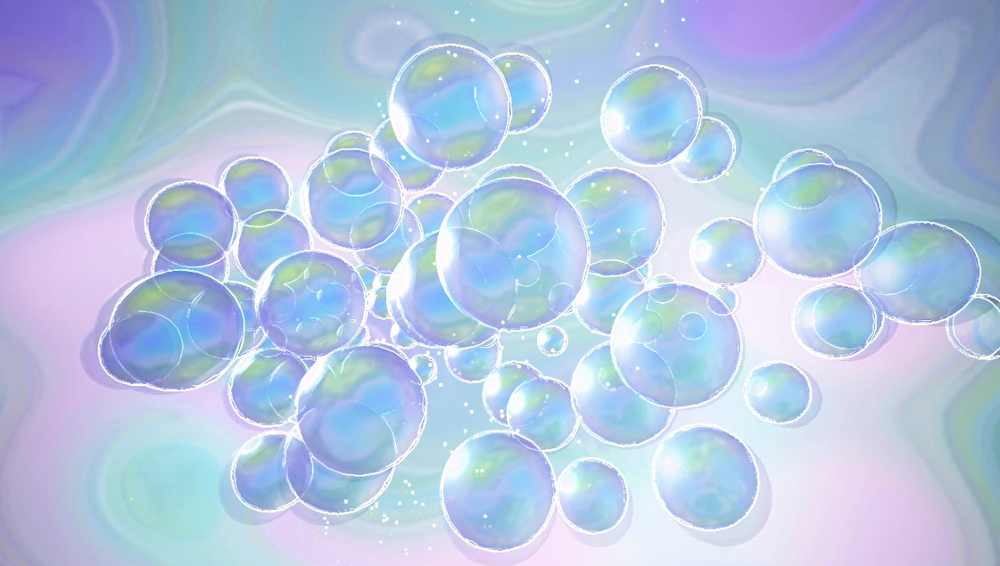
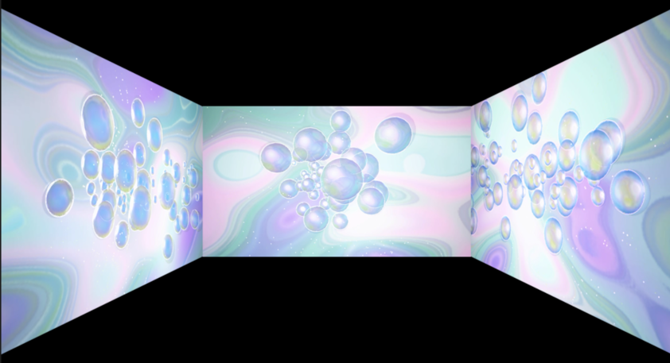
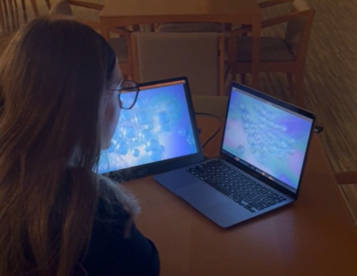
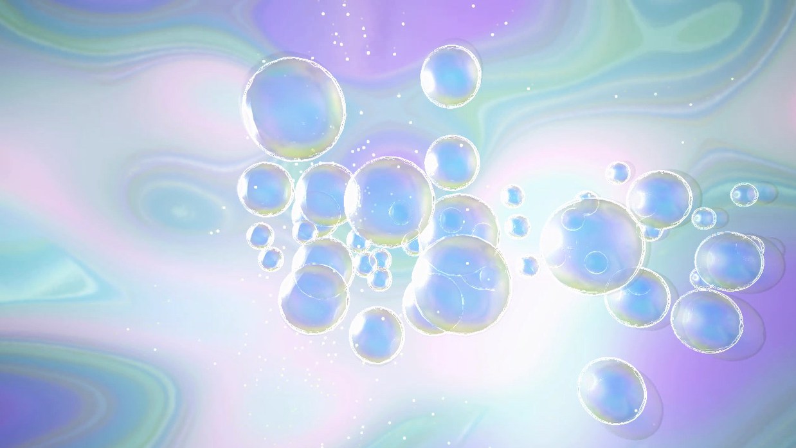
A Guiding Light is a short film highlighting the power of community in uncertain times. Set in a world where power and magic is heightened as a collective, populations are kept separate and isolated in their own homes. Inspired by speakeasies of the prohibition, A Guiding Light explores the power of hope and connection as a form of rebellion.
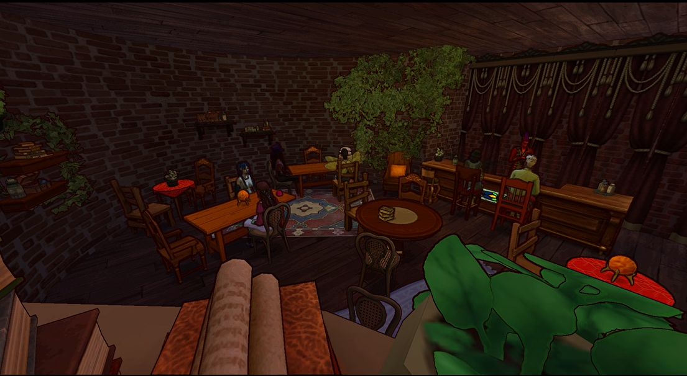
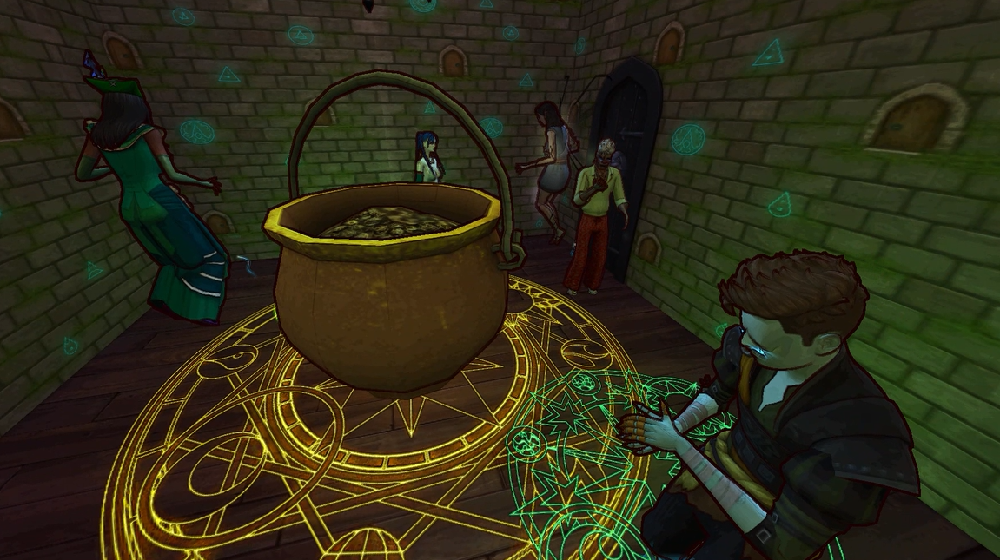
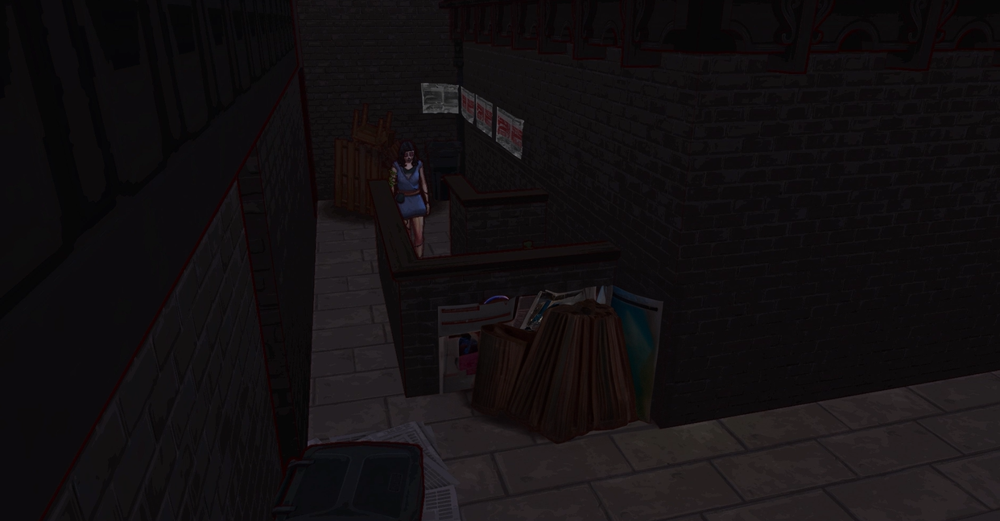